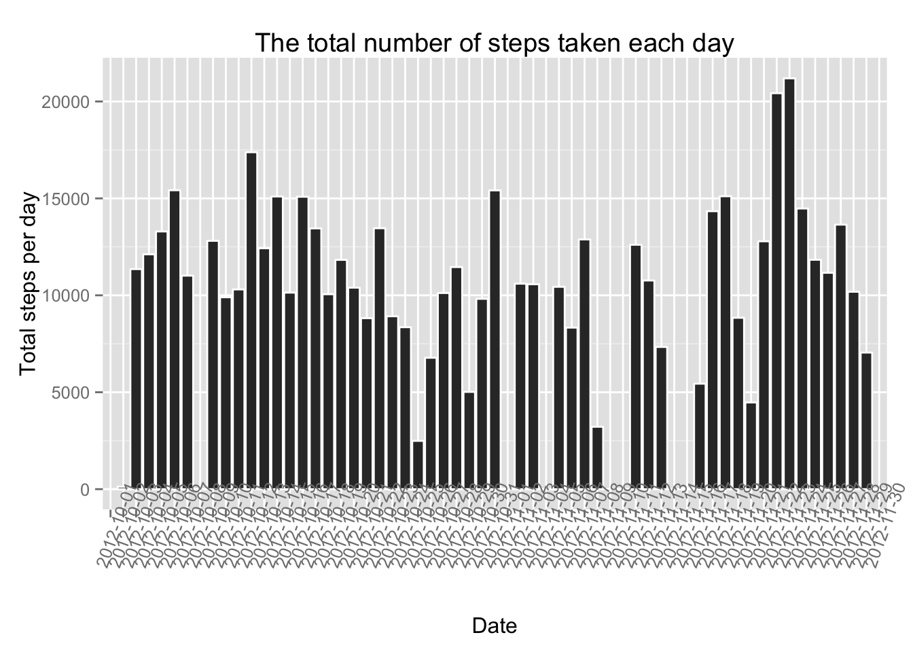
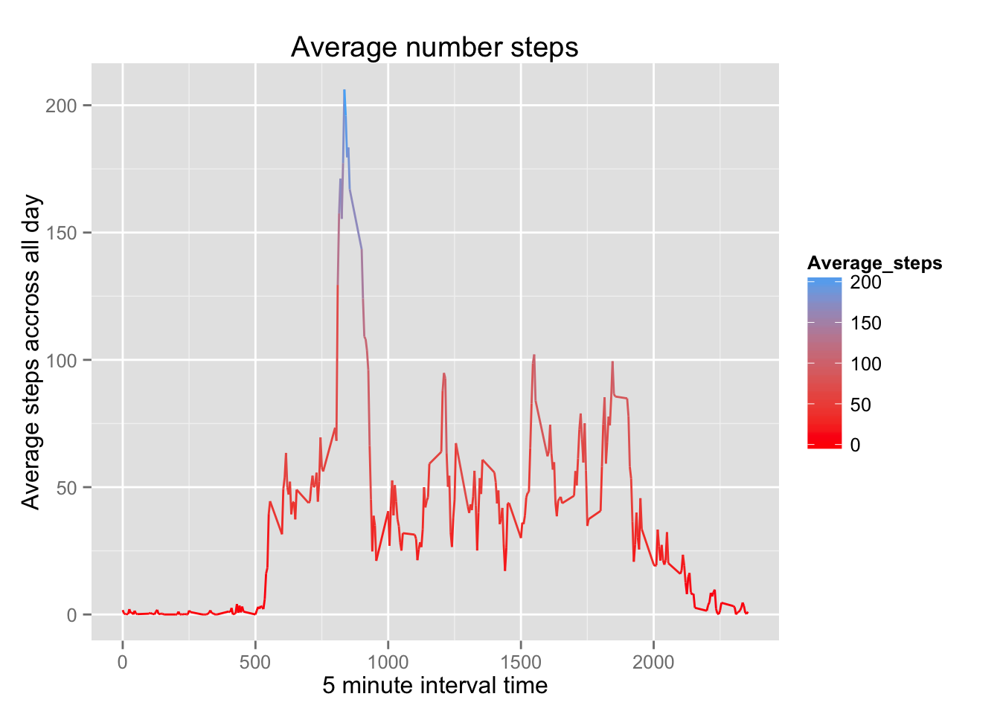
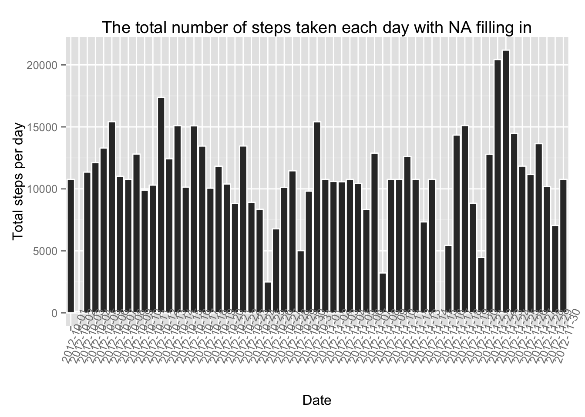
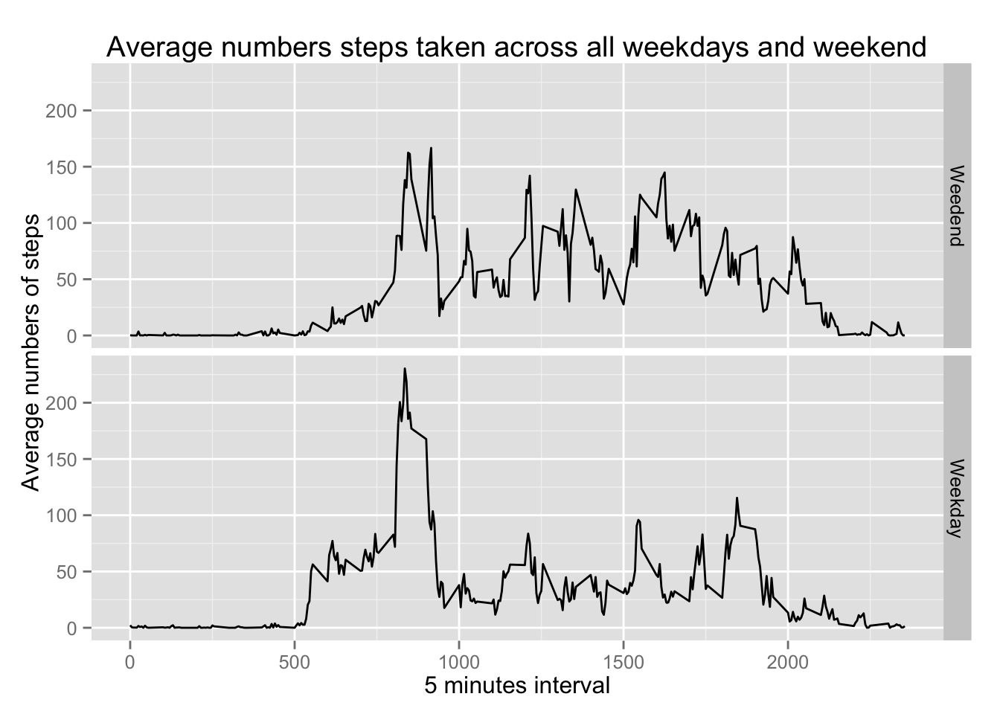

Let’s load data first.
library(dplyr)##
## Attaching package: 'dplyr'
##
## The following object is masked from 'package:stats':
##
## filter
##
## The following objects are masked from 'package:base':
##
## intersect, setdiff, setequal, unionlibrary(ggplot2)
#library(plyr)
#read data
data <- read.csv("activity.csv", head = T, stringsAsFactor = F)#part 1: calculate total steps taken per day
total.steps <- data %>%
group_by(date) %>%
summarize(total.steps = sum(steps, na.rm = T) )
names(total.steps)[2] <- "total"
total <- total.steps$total
total.steps## Source: local data frame [61 x 2]
##
## date total
## 1 2012-10-01 0
## 2 2012-10-02 126
## 3 2012-10-03 11352
## 4 2012-10-04 12116
## 5 2012-10-05 13294
## 6 2012-10-06 15420
## 7 2012-10-07 11015
## 8 2012-10-08 0
## 9 2012-10-09 12811
## 10 2012-10-10 9900
## .. ... ...#make a histogram
ggplot(total.steps, aes(x = date, y = total)) + geom_histogram(stat = "identity", binwidth = 70, color = "white") +
theme(axis.text.x = element_text(angle = 70)) + xlab("Date") + ylab("Total steps per day") +
ggtitle("The total number of steps taken each day")
#calculate mean and median
data <- group_by(data, date)
mean.steps <- summarize(data, mean(steps, na.rm = T))
median.steps <- summarize(data, median(steps, na.rm = T))
total.daily <- summarize(data, sum(steps, na.rm = T))
names(total.daily)[2] <- "total"
names(mean.steps)[2] <- "mean"
names(median.steps)[2] <- "median"
mean.steps## Source: local data frame [61 x 2]
##
## date mean
## 1 2012-10-01 NA
## 2 2012-10-02 0.43750
## 3 2012-10-03 39.41667
## 4 2012-10-04 42.06944
## 5 2012-10-05 46.15972
## 6 2012-10-06 53.54167
## 7 2012-10-07 38.24653
## 8 2012-10-08 NaN
## 9 2012-10-09 44.48264
## 10 2012-10-10 34.37500
## .. ... ...median.steps## Source: local data frame [61 x 2]
##
## date median
## 1 2012-10-01 NA
## 2 2012-10-02 0
## 3 2012-10-03 0
## 4 2012-10-04 0
## 5 2012-10-05 0
## 6 2012-10-06 0
## 7 2012-10-07 0
## 8 2012-10-08 NA
## 9 2012-10-09 0
## 10 2012-10-10 0
## .. ... ...#part 2:calculate average steps taken by 5 min interval
interval <- group_by(data, interval)
interval.steps <- summarize(interval, mean(steps, na.rm = T))
names(interval.steps)[2] <- "interval.total"
Average_steps <- interval.steps$interval.total
interval.steps## Source: local data frame [288 x 2]
##
## interval interval.total
## 1 0 1.7169811
## 2 5 0.3396226
## 3 10 0.1320755
## 4 15 0.1509434
## 5 20 0.0754717
## 6 25 2.0943396
## 7 30 0.5283019
## 8 35 0.8679245
## 9 40 0.0000000
## 10 45 1.4716981
## .. ... ...#make interval.steps as time series
ggplot(interval.steps, aes(interval, Average_steps), breaks = 10) +
geom_line(aes(colour = Average_steps)) + scale_colour_gradient(low = "red") +
xlab("5 minute interval time") + ylab("Average steps accross all day") +
ggtitle("Average number steps")
#the max number
max <- max(Total_steps)
interval <- interval.steps[Total_steps == max, ]#part 3: sum total NA number
na.total <- sum(is.na(data$steps))
na.total## [1] 2304#merge data with interval steps
na.day <- merge(data, interval.steps)
#replace NA with average number by 5 mins interval
na.day$steps = ifelse(is.na(na.day$steps), na.day$interval.total, na.day$steps)
#creat a new data with NA filled with average steps taken in every 5 minutes interval.
data2 <- select(na.day, steps, date, interval)
data2 <- arrange(data2, interval)
data2 <- arrange(data2, date)
head(data)## Source: local data frame [6 x 3]
## Groups: date
##
## steps date interval
## 1 NA 2012-10-01 0
## 2 NA 2012-10-01 5
## 3 NA 2012-10-01 10
## 4 NA 2012-10-01 15
## 5 NA 2012-10-01 20
## 6 NA 2012-10-01 25head(data2)## steps date interval
## 1 1.7169811 2012-10-01 0
## 2 0.3396226 2012-10-01 5
## 3 0.1320755 2012-10-01 10
## 4 0.1509434 2012-10-01 15
## 5 0.0754717 2012-10-01 20
## 6 2.0943396 2012-10-01 25#total number taken each day in new data
total.day <- group_by(data2, date)
total2<- summarize(total.day, sum(steps))
names(total2)[2] <- "total2"
#creat histogram of the total number of steps taken each day
ggplot(total2, aes(x = date, y = total2)) +
geom_histogram(stat = "identity", binwidth = 70, color = "white") +
theme(axis.text.x = element_text(angle = 70)) + xlab("Date") + ylab("Total steps per day") +
ggtitle("The total number of steps taken each day with NA filling in")
#calculate mean and median value in data2
data2 <- group_by(data2, date)
mean.steps2 <- summarize(data2, mean(steps))
median.steps2 <- summarize(data2, median(steps))
names(mean.steps2)[2] <- "mean"
names(median.steps2)[2] <- "median"
head(mean.steps2)## Source: local data frame [6 x 2]
##
## date mean
## 1 2012-10-01 37.38260
## 2 2012-10-02 0.43750
## 3 2012-10-03 39.41667
## 4 2012-10-04 42.06944
## 5 2012-10-05 46.15972
## 6 2012-10-06 53.54167head(median.steps2)## Source: local data frame [6 x 2]
##
## date median
## 1 2012-10-01 34.11321
## 2 2012-10-02 0.00000
## 3 2012-10-03 0.00000
## 4 2012-10-04 0.00000
## 5 2012-10-05 0.00000
## 6 2012-10-06 0.00000#the mean and median in two data are exactly the same except NA
total.daily2 <- summarize(data2, sum(steps))
names(total.daily2)[2] <- "total"
total.daily## Source: local data frame [61 x 2]
##
## date total
## 1 2012-10-01 0
## 2 2012-10-02 126
## 3 2012-10-03 11352
## 4 2012-10-04 12116
## 5 2012-10-05 13294
## 6 2012-10-06 15420
## 7 2012-10-07 11015
## 8 2012-10-08 0
## 9 2012-10-09 12811
## 10 2012-10-10 9900
## .. ... ...total.daily2## Source: local data frame [61 x 2]
##
## date total
## 1 2012-10-01 10766.19
## 2 2012-10-02 126.00
## 3 2012-10-03 11352.00
## 4 2012-10-04 12116.00
## 5 2012-10-05 13294.00
## 6 2012-10-06 15420.00
## 7 2012-10-07 11015.00
## 8 2012-10-08 10766.19
## 9 2012-10-09 12811.00
## 10 2012-10-10 9900.00
## .. ... ...#total daily number depends on the step numbers taken every day#part 4: creat weekday and weekend
data2$day <- weekdays(as.Date(data2$date))
week.day <- unique(day)[1:5]
data2$day <- ifelse( data2$day %in% week.day, "Weekday", "Weedend")
data3 <- data2 %>%
group_by(interval, day) %>%
summarize( avg.steps = mean(steps) )
head(data2)## Source: local data frame [6 x 4]
## Groups: date
##
## steps date interval day
## 1 1.7169811 2012-10-01 0 Weekday
## 2 0.3396226 2012-10-01 5 Weekday
## 3 0.1320755 2012-10-01 10 Weekday
## 4 0.1509434 2012-10-01 15 Weekday
## 5 0.0754717 2012-10-01 20 Weekday
## 6 2.0943396 2012-10-01 25 Weekday#creat a panel plot
ggplot(data3, aes(interval, avg.steps )) +
geom_line() + facet_grid( day ~ . ) + xlab("5 minutes interval") + ylab("Average numbers of steps") + ggtitle("Average numbers steps taken across all weekdays and weekend") +
theme(legend.position="none") 